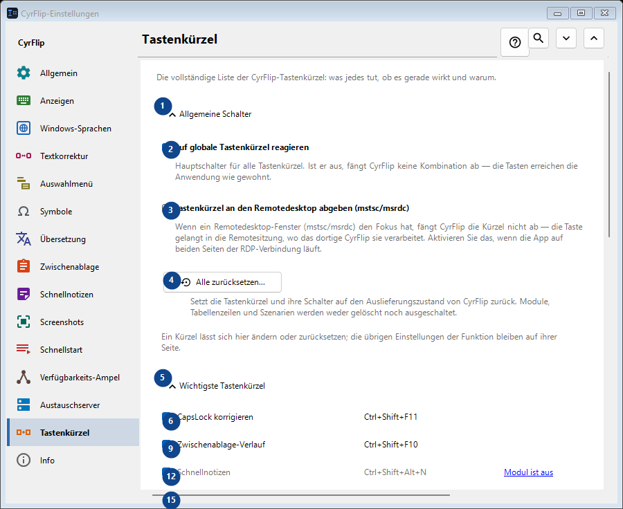
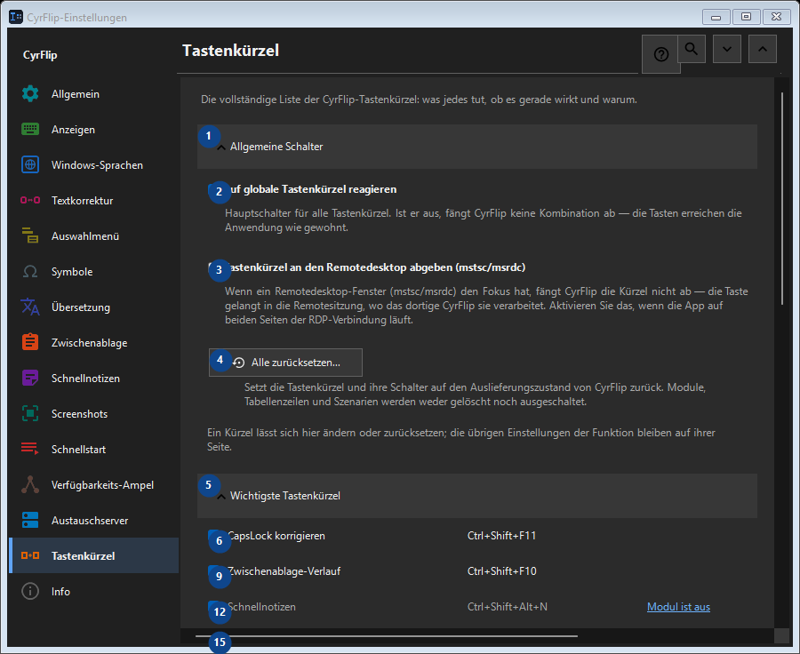

Tastenkürzel
Zweck
Die vollständige Liste der CyrFlip-Tastenkürzel: was jedes tut, ob es gerade wirkt und warum.


Reihenfolge
Einstellungen gelten sofort. Eine feste Reihenfolge ist nicht nötig; nutzen Sie die Gruppen unten.
Elemente
1. Allgemeine Schalter
Nutzen Sie diesen Befehl für die genannte Aktion. Lesen Sie eine Bestätigung, bevor Sie zustimmen.
Ihre Tastenkürzel2. Auf globale Tastenkürzel reagieren
Hauptschalter für alle Tastenkürzel. Ist er aus, fängt CyrFlip keine Kombination ab — die Tasten erreichen die Anwendung wie gewohnt.
Ihre Tastenkürzel3. Tastenkürzel an den Remotedesktop abgeben (mstsc/msrdc)
Wenn ein Remotedesktop-Fenster (mstsc/msrdc) den Fokus hat, fängt CyrFlip die Kürzel nicht ab — die Taste gelangt in die Remotesitzung, wo das dortige CyrFlip sie verarbeitet. Aktivieren Sie das, wenn die App auf beiden Seiten der RDP-Verbindung läuft.
Ihre Tastenkürzel4. Alle zurücksetzen...
Setzt die Tastenkürzel und ihre Schalter auf den Auslieferungszustand von CyrFlip zurück. Module, Tabellenzeilen und Szenarien werden weder gelöscht noch ausgeschaltet.
Ihre Tastenkürzel5. Wichtigste Tastenkürzel
Nutzen Sie diesen Befehl für die genannte Aktion. Lesen Sie eine Bestätigung, bevor Sie zustimmen.
Ihre Tastenkürzel6. CapsLock korrigieren Ctrl+Shift+F11
Nutzen Sie diesen Befehl für die genannte Aktion. Lesen Sie eine Bestätigung, bevor Sie zustimmen.
Ihre Tastenkürzel7. Ändern... - CapsLock korrigieren Ctrl+Shift+F11
Nutzen Sie diesen Befehl für die genannte Aktion. Lesen Sie eine Bestätigung, bevor Sie zustimmen.
Ihre Tastenkürzel8. Als Standard - CapsLock korrigieren Ctrl+Shift+F11
Nutzen Sie diesen Befehl für die genannte Aktion. Lesen Sie eine Bestätigung, bevor Sie zustimmen. Dieses Element ist derzeit nicht verfügbar. Aktivieren Sie zuerst die Funktion oder wählen Sie einen Eintrag.
Ihre Tastenkürzel9. Zwischenablage-Verlauf Ctrl+Shift+F10
Nutzen Sie diesen Befehl für die genannte Aktion. Lesen Sie eine Bestätigung, bevor Sie zustimmen.
Ihre Tastenkürzel10. Ändern... - Zwischenablage-Verlauf Ctrl+Shift+F10
Nutzen Sie diesen Befehl für die genannte Aktion. Lesen Sie eine Bestätigung, bevor Sie zustimmen.
Ihre Tastenkürzel11. Als Standard - Zwischenablage-Verlauf Ctrl+Shift+F10
Nutzen Sie diesen Befehl für die genannte Aktion. Lesen Sie eine Bestätigung, bevor Sie zustimmen. Dieses Element ist derzeit nicht verfügbar. Aktivieren Sie zuerst die Funktion oder wählen Sie einen Eintrag.
Ihre Tastenkürzel12. Schnellnotizen Ctrl+Shift+Alt+N
Nutzen Sie diesen Befehl für die genannte Aktion. Lesen Sie eine Bestätigung, bevor Sie zustimmen.
Ihre Tastenkürzel13. Ändern... - Schnellnotizen Ctrl+Shift+Alt+N
Nutzen Sie diesen Befehl für die genannte Aktion. Lesen Sie eine Bestätigung, bevor Sie zustimmen.
Ihre Tastenkürzel14. Als Standard - Schnellnotizen Ctrl+Shift+Alt+N
Nutzen Sie diesen Befehl für die genannte Aktion. Lesen Sie eine Bestätigung, bevor Sie zustimmen. Dieses Element ist derzeit nicht verfügbar. Aktivieren Sie zuerst die Funktion oder wählen Sie einen Eintrag.
Ihre Tastenkürzel15. Symbolfenster Ctrl+Shift+F9
Nutzen Sie diesen Befehl für die genannte Aktion. Lesen Sie eine Bestätigung, bevor Sie zustimmen.
Ihre Tastenkürzel16. Ändern... - Symbolfenster Ctrl+Shift+F9
Nutzen Sie diesen Befehl für die genannte Aktion. Lesen Sie eine Bestätigung, bevor Sie zustimmen.
Ihre Tastenkürzel17. Als Standard - Symbolfenster Ctrl+Shift+F9
Nutzen Sie diesen Befehl für die genannte Aktion. Lesen Sie eine Bestätigung, bevor Sie zustimmen. Dieses Element ist derzeit nicht verfügbar. Aktivieren Sie zuerst die Funktion oder wählen Sie einen Eintrag.
Ihre Tastenkürzel18. Verfügbarkeits-Ampel Ctrl+Shift+Alt+T
Nutzen Sie diesen Befehl für die genannte Aktion. Lesen Sie eine Bestätigung, bevor Sie zustimmen.
Ihre Tastenkürzel19. Ändern... - Verfügbarkeits-Ampel Ctrl+Shift+Alt+T
Nutzen Sie diesen Befehl für die genannte Aktion. Lesen Sie eine Bestätigung, bevor Sie zustimmen.
Ihre Tastenkürzel20. Als Standard - Verfügbarkeits-Ampel Ctrl+Shift+Alt+T
Nutzen Sie diesen Befehl für die genannte Aktion. Lesen Sie eine Bestätigung, bevor Sie zustimmen. Dieses Element ist derzeit nicht verfügbar. Aktivieren Sie zuerst die Funktion oder wählen Sie einen Eintrag.
Ihre Tastenkürzel21. Bildschirmausschnitt aufnehmen Ctrl+F12
Nutzen Sie diesen Befehl für die genannte Aktion. Lesen Sie eine Bestätigung, bevor Sie zustimmen.
Ihre Tastenkürzel22. Ändern... - Bildschirmausschnitt aufnehmen Ctrl+F12
Nutzen Sie diesen Befehl für die genannte Aktion. Lesen Sie eine Bestätigung, bevor Sie zustimmen.
Ihre Tastenkürzel23. Als Standard - Bildschirmausschnitt aufnehmen Ctrl+F12
Nutzen Sie diesen Befehl für die genannte Aktion. Lesen Sie eine Bestätigung, bevor Sie zustimmen. Dieses Element ist derzeit nicht verfügbar. Aktivieren Sie zuerst die Funktion oder wählen Sie einen Eintrag.
Ihre Tastenkürzel24. Ganzer Bildschirm aufnehmen Ctrl+F11
Nutzen Sie diesen Befehl für die genannte Aktion. Lesen Sie eine Bestätigung, bevor Sie zustimmen.
Ihre Tastenkürzel25. Ändern... - Ganzer Bildschirm aufnehmen Ctrl+F11
Nutzen Sie diesen Befehl für die genannte Aktion. Lesen Sie eine Bestätigung, bevor Sie zustimmen.
Ihre Tastenkürzel26. Als Standard - Ganzer Bildschirm aufnehmen Ctrl+F11
Nutzen Sie diesen Befehl für die genannte Aktion. Lesen Sie eine Bestätigung, bevor Sie zustimmen. Dieses Element ist derzeit nicht verfügbar. Aktivieren Sie zuerst die Funktion oder wählen Sie einen Eintrag.
Ihre Tastenkürzel27. Ausschnitt mit Zeichnen aufnehmen Ctrl+Alt+F12
Nutzen Sie diesen Befehl für die genannte Aktion. Lesen Sie eine Bestätigung, bevor Sie zustimmen.
Ihre Tastenkürzel28. Ändern... - Ausschnitt mit Zeichnen aufnehmen Ctrl+Alt+F12
Nutzen Sie diesen Befehl für die genannte Aktion. Lesen Sie eine Bestätigung, bevor Sie zustimmen.
Ihre Tastenkürzel29. Als Standard - Ausschnitt mit Zeichnen aufnehmen Ctrl+Alt+F12
Nutzen Sie diesen Befehl für die genannte Aktion. Lesen Sie eine Bestätigung, bevor Sie zustimmen. Dieses Element ist derzeit nicht verfügbar. Aktivieren Sie zuerst die Funktion oder wählen Sie einen Eintrag.
Ihre Tastenkürzel30. Ganzen Bildschirm mit Zeichnen aufnehmen Ctrl+Alt+F11
Nutzen Sie diesen Befehl für die genannte Aktion. Lesen Sie eine Bestätigung, bevor Sie zustimmen.
Ihre Tastenkürzel31. Ändern... - Ganzen Bildschirm mit Zeichnen aufnehmen Ctrl+Alt+F11
Nutzen Sie diesen Befehl für die genannte Aktion. Lesen Sie eine Bestätigung, bevor Sie zustimmen.
Ihre Tastenkürzel32. Als Standard - Ganzen Bildschirm mit Zeichnen aufnehmen Ctrl+Alt+F11
Nutzen Sie diesen Befehl für die genannte Aktion. Lesen Sie eine Bestätigung, bevor Sie zustimmen. Dieses Element ist derzeit nicht verfügbar. Aktivieren Sie zuerst die Funktion oder wählen Sie einen Eintrag.
Ihre Tastenkürzel33. Screenshots-Ordner öffnen Ctrl+F10
Nutzen Sie diesen Befehl für die genannte Aktion. Lesen Sie eine Bestätigung, bevor Sie zustimmen.
Ihre Tastenkürzel34. Ändern... - Screenshots-Ordner öffnen Ctrl+F10
Nutzen Sie diesen Befehl für die genannte Aktion. Lesen Sie eine Bestätigung, bevor Sie zustimmen.
Ihre Tastenkürzel35. Als Standard - Screenshots-Ordner öffnen Ctrl+F10
Nutzen Sie diesen Befehl für die genannte Aktion. Lesen Sie eine Bestätigung, bevor Sie zustimmen. Dieses Element ist derzeit nicht verfügbar. Aktivieren Sie zuerst die Funktion oder wählen Sie einen Eintrag.
Ihre Tastenkürzel36. Menü über die Tastatur öffnen Ctrl+Shift+Alt+M
Nutzen Sie diesen Befehl für die genannte Aktion. Lesen Sie eine Bestätigung, bevor Sie zustimmen.
Ihre Tastenkürzel37. Ändern... - Menü über die Tastatur öffnen Ctrl+Shift+Alt+M
Nutzen Sie diesen Befehl für die genannte Aktion. Lesen Sie eine Bestätigung, bevor Sie zustimmen.
Ihre Tastenkürzel38. Als Standard - Menü über die Tastatur öffnen Ctrl+Shift+Alt+M
Nutzen Sie diesen Befehl für die genannte Aktion. Lesen Sie eine Bestätigung, bevor Sie zustimmen. Dieses Element ist derzeit nicht verfügbar. Aktivieren Sie zuerst die Funktion oder wählen Sie einen Eintrag.
Ihre Tastenkürzel39. Zwischenablage an den Server senden
Nutzen Sie diesen Befehl für die genannte Aktion. Lesen Sie eine Bestätigung, bevor Sie zustimmen.
Ihre Tastenkürzel40. Ändern... - Zwischenablage an den Server senden
Nutzen Sie diesen Befehl für die genannte Aktion. Lesen Sie eine Bestätigung, bevor Sie zustimmen.
Ihre Tastenkürzel41. Als Standard - Zwischenablage an den Server senden
Nutzen Sie diesen Befehl für die genannte Aktion. Lesen Sie eine Bestätigung, bevor Sie zustimmen. Dieses Element ist derzeit nicht verfügbar. Aktivieren Sie zuerst die Funktion oder wählen Sie einen Eintrag.
Ihre Tastenkürzel42. Zwischenablage vom Server abrufen
Nutzen Sie diesen Befehl für die genannte Aktion. Lesen Sie eine Bestätigung, bevor Sie zustimmen.
Ihre Tastenkürzel43. Ändern... - Zwischenablage vom Server abrufen
Nutzen Sie diesen Befehl für die genannte Aktion. Lesen Sie eine Bestätigung, bevor Sie zustimmen.
Ihre Tastenkürzel44. Als Standard - Zwischenablage vom Server abrufen
Nutzen Sie diesen Befehl für die genannte Aktion. Lesen Sie eine Bestätigung, bevor Sie zustimmen. Dieses Element ist derzeit nicht verfügbar. Aktivieren Sie zuerst die Funktion oder wählen Sie einen Eintrag.
Ihre Tastenkürzel45. Maus
Nutzen Sie diesen Befehl für die genannte Aktion. Lesen Sie eine Bestätigung, bevor Sie zustimmen.
Ihre Tastenkürzel46. Ändern... - Menü über der Auswahl Ctrl + rechte Maustaste
Nutzen Sie diesen Befehl für die genannte Aktion. Lesen Sie eine Bestätigung, bevor Sie zustimmen.
Ihre Tastenkürzel47. Als Standard - Menü über der Auswahl Ctrl + rechte Maustaste
Nutzen Sie diesen Befehl für die genannte Aktion. Lesen Sie eine Bestätigung, bevor Sie zustimmen. Dieses Element ist derzeit nicht verfügbar. Aktivieren Sie zuerst die Funktion oder wählen Sie einen Eintrag.
Ihre Tastenkürzel48. Layout-Umwandlung
Nutzen Sie diesen Befehl für die genannte Aktion. Lesen Sie eine Bestätigung, bevor Sie zustimmen.
Ihre Tastenkürzel49. Übersetzung
Nutzen Sie diesen Befehl für die genannte Aktion. Lesen Sie eine Bestätigung, bevor Sie zustimmen.
Ihre Tastenkürzel50. Schnellstart
Nutzen Sie diesen Befehl für die genannte Aktion. Lesen Sie eine Bestätigung, bevor Sie zustimmen.
Ihre Tastenkürzel51. Windows
Nutzen Sie diesen Befehl für die genannte Aktion. Lesen Sie eine Bestätigung, bevor Sie zustimmen.
Ihre Tastenkürzel